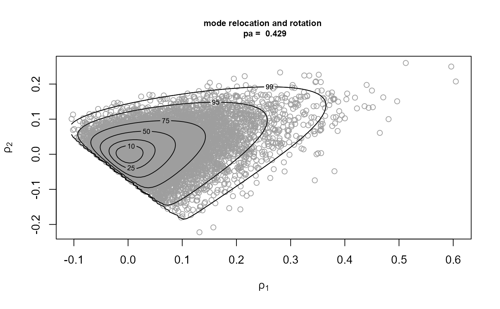
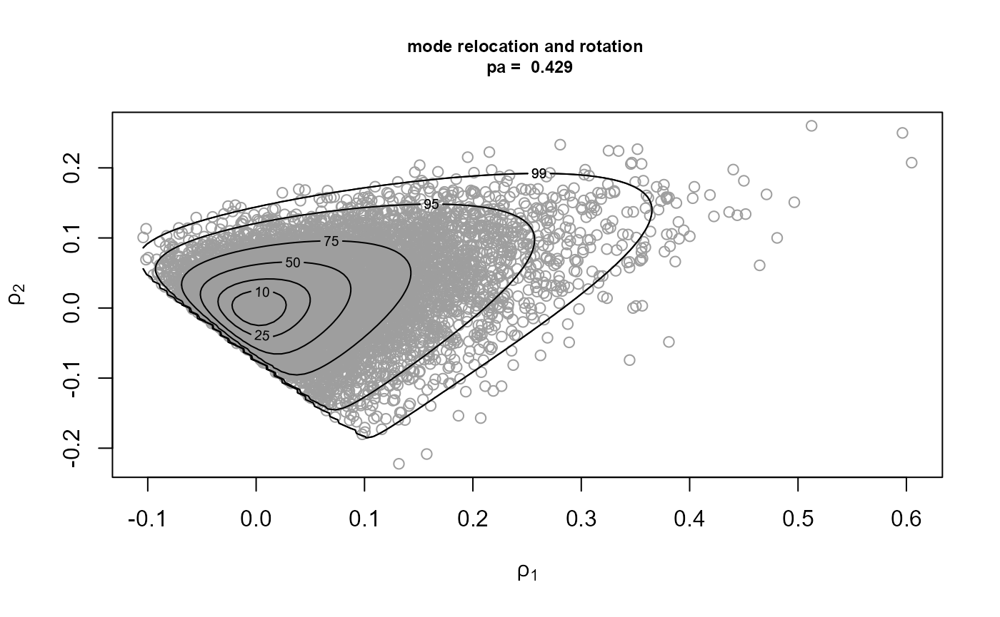
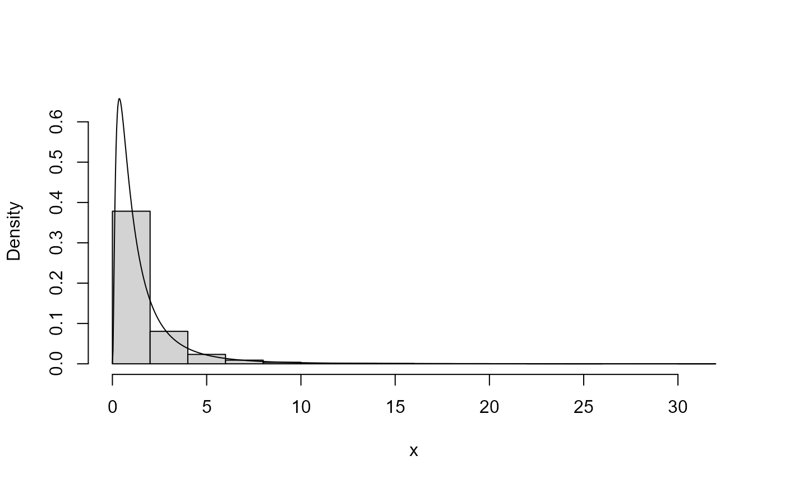
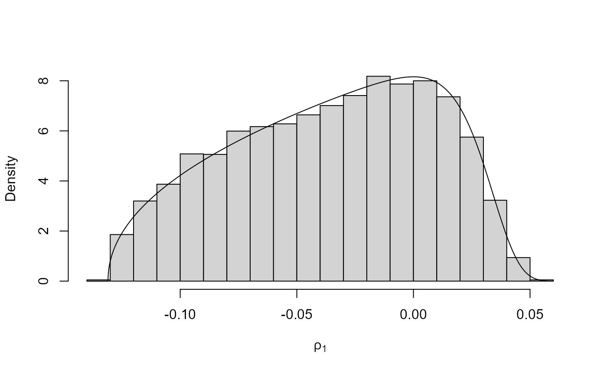
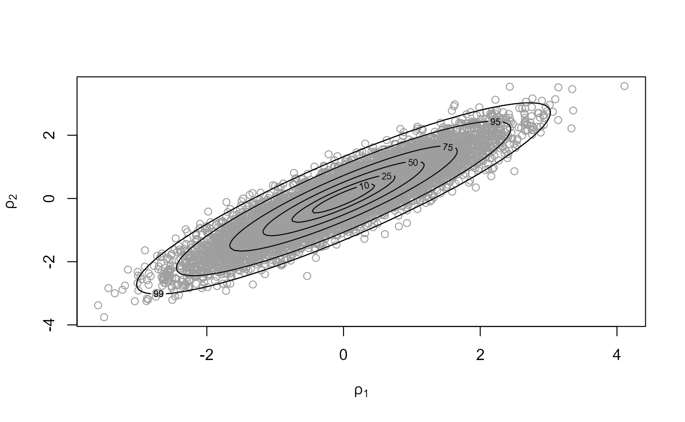

Introducing rust: Ratio-of-Uniforms Simulation with Transformation
Paul Northrop
2023-09-02
Source:vignettes/rust-a-vignette.Rmd
rust-a-vignette.RmdThe rust package implements the multivariate generalized ratio-of-uniforms method for simulating random variates from a \(d\)-dimensional continuous distribution. The user specifies (the log of) a positive target function \(f\) that is proportional to the density function of the distribution. For guidance on which target functions are suitable see the vignette When can rust be used?.
The user can provide either an R function (to ru) or,
from version 1.2.0, a (pointer to a) C++ function (to
ru_rcpp). This vignette gives examples of the former. For
examples of the latter see the vignette Rusting faster: Speedy Simulation
using Rcpp.
The ratio-of-uniforms method has been used to simulate from low-dimensional distributions in Bayesian analyses, either as part of a Gibbs sampler, a Markov Chain Monte Carlo (MCMC) algorithm, (Wakefield et al. 1994) or to simulate directly from a posterior distribution (Northrop, Attalides, and Jonathan 2016). rust is unlikely to be of direct use in high-dimensional problems because its efficiency decreases with dimension, but it may provide an alternative to MCMC methods in Bayesian analyses of models with small numbers of parameters. rust is used by the package revdbayes package (Northrop 2017) to perform Bayesian extreme value analyses. Potential advantages over MCMC methods are that it produces a random sample of the desired size rather than a dependent sample and avoids the need for MCMC convergence diagnostics.
The generalized ratio-of-uniforms method is an acceptance-rejection algorithm: proposals are simulated uniformly over a \((d+1)\)-dimensional region, typically a box, that bounds an acceptance region \(C(r)\), where \(r \geq 0\) is a tuning parameter. The probability of acceptance \(p_a(d, r)\), i.e. the probability that an arbitrary proposal is accepted, is given by the ratio of the volume of \(C(r)\) to the volume of the bounding region. Wakefield, Gelfand, and Smith (1991) suggest the strategy of relocating the mode of \(f\) to the origin as a means of increasing efficiency, in the sense of increasing \(p_a(d, r)\). However, \(p_a(d, r)\) may still be low even after mode relocation. In some cases it is not possible to find a simple region to bound \(C(r)\), which means that the ratio-of-uniforms method cannot be used. Transformation of variable, such as the Box-Cox family (Box and Cox 1964) provided in rust, can be helpful in these instances. In the multi-dimensional cases strong association between the variables tends to result in a low \(p_a(d, r)\). rust finds a rotation of variable axes that reduces the association to increase \(p_a(d, r)\). The user can also specify their own variable transformation.
The main function in the rust package is ru, which
implements the generalized ratio-of-uniforms algorithm. Also provided
are two functions, find_lambda and
find_lambda_one_d, that may be used to set a suitable value
for the parameter lambda if Box-Cox transformation is used
prior to simulation. These are somewhat ad hoc but they work
well on the examples studied so far. Basic plot and summary methods are
also provided.
The multivariate generalized ratio-of-uniforms method
This description follows Wakefield, Gelfand, and Smith (1991). Suppose that we wish to simulate values of a \(d\)-dimensional continuous random variable \(X = (X_1, \ldots, X_d)\) with density function proportional to a positive integrable function \(f(x)\) over a subset \(\chi\) of \(\mathbb{R}^d\), where \(x =(x_1, \ldots, x_d)\). If variables \((u, v_1, \ldots, v_d)\) are uniformly distributed over \[ C(r) = \left\{ (u, v_1, \ldots, v_d): 0 < u \leq \left[ f\left( \frac{v_1}{u^r}, \ldots, \frac{v_d}{u^r} \right) \right] ^ {1/(r d + 1)} \right\} \] for some \(r \geq 0\), then \((v_1 / u ^r, \ldots, v_d / u ^ r)\) has density \(f(x) / \int f(x) {\rm ~d}x\). Typically, it is not possible directly to simulate \((u, v_1, \ldots, v_d)\) uniformly over \(C(r)\). Instead we simulate uniformly over a simpler region that encloses \(C(r)\) accepting only those values for which the inequality in the definition of \(C(r)\) holds. If, over \(\chi\), \(f(x)\) and \(x_i^{r d +1} f(x)^r\), \(i = 1, \ldots, d\), are bounded then we can enclose \(C(r)\) within the \((d+1)\)-dimensional bounding box \(\{ 0 < u \leq a(r), \, b_i^-(r) \leq v_i \leq b_i^+(r), \, i = 1, \ldots, d \}\), where the parameters of the bounding box are given by \[ \begin{eqnarray} a(r) &=& \sup_\chi \, f(x)^{1 / (r d + 1)}, \\ b_i^-(r) &=& \inf_{\chi_i^-} \, x_i \, f(x)^{r / (r d + 1)}, \\ b_i^+(r) &=& \sup_{\chi_i^+} \, x_i \, f(x)^{r / (r d + 1)}, \end{eqnarray} \] where \(\chi_i^- = \{ x \in \chi, x_i \leq 0 \}\) and \(\chi_i^+ = \{ x \in \chi, x_i \geq 0 \}\). The probability of acceptance \(p_a(d, r)\) of a point simulated uniformly over the bounding box is given by \[ p_a(d, r) = \frac{\int f(x) {\rm ~d}x}{(r d + 1) \, a(r) \displaystyle\prod_{i=1}^d \left[b_i^+(r) -b_i^-(r) \right]}. \]
Example: the multivariate normal distribution
To study how the efficiency of the ratio-of-uniforms method decreases with dimension \(d\) a useful benchmark is provided by the zero-mean \(d\)-dimensional normal distribution with independent components. Without loss of generality we work with the case with unit marginal variances, i.e. \[ f(x) \propto \exp\left( -\frac12 \sum_{i=1}^d x_i^2 \right).\]
For all dimensions \(d\) the maximal probability of acceptance occurs when \(r = 1/2\), giving \[ p_a(d, 1/2) = \frac{(\pi e)^{d/2}}{2^d (1+d/2)^{1+d/2}}. \] The maximal probability of acceptance decreases rapidly as \(d\) increases, as the following table shows.
| 1 | 2 | 3 | 4 | 5 | 6 |
|---|---|---|---|---|---|
| 0.795 | 0.534 | 0.316 | 0.169 | 0.083 | 0.038 |
It can be shown that introducing any correlation between the components reduces \(p_a(d, r)\). Later, we consider using transformations to make the target density function closer to that of a \(d\)-dimensional normal distribution with independent components. The closeness of the resulting probability of acceptance to the relevant value in the table above is a measure of how successful we have been.
Transformation of variable prior to sampling
Relocation of the mode to the origin
Wakefield, Gelfand, and Smith (1991) consider the strategy of shifting the location of the target function \(f\) towards the original prior to sampling, that is, we simulate \(y\) from the distribution of \(Y = X-\mu\) and then transform back to the original scale using \(x = y + \mu\). They show that if, in the 1-dimensional case, \(f\) is unimodal and symmetric choosing \(\mu\) to be the mode of \(f\) maximizes \(p_a(1, r)\) for all \(r\). Their proof extends to the multivariate case: mode relocation is optimal for unimodal \(d\)-dimensional densities for which all the marginal densities are symmetric.
Wakefield, Gelfand, and Smith (1991)
suggest mode relocation and use of \(r =
1/2\) as a good general strategy when \(f\) is approximately unimodal. For this
reason, and because experience suggests that this produces greater
numerical stability in finding the bounding box parameters, the
ru function in rust is hard-wired always
to use mode relocation. The mode of the target function is relocated to
the origin after any user-supplied transformation and/or
Box-Cox transformation and before any rotation of axes. The
default value of \(r\) is \(1/2\) but the user can change this.
Transformations to improve normality and reduce association
The general idea is the same as mode relocation, i.e. to simulate from the distribution of some transformation of the original variable and transform the simulated values back to the original scale. Our aim is to use a transformation for which the transformed variable is closer than the original to being a \(d\)-dimensional normal distribution with independent components. The table above gives us an indication of the best probability of acceptance we can hope to achieve for a given \(d\). Thus, we may be able to increase the probability of acceptance. In some examples, the original density is not suitable for the ratio-of-uniforms method because it is not possible to enclose \(C(r)\) within a bounding box, perhaps because the density is unbounded. It may be that a transformation of variable produces a bounded density for which a bounding box be constructed.
From now on we denote the target variable as \(\theta = (\theta_1, \ldots, \theta_d)\). We consider a sequence of four transformations: from \(\theta\) to \(\phi\); from \(\phi\) to \(\psi\); mode relocation on the \(\psi\)-scale; and from (mode relocated) \(\psi\) to \(\rho\).
- \(\phi=\phi(\theta)\) is a user-defined transformation that could be used to ensure that all components of \(\phi\) are positive prior to a Box-Cox transformation.
- \(\psi=\psi(\phi)\) performs Box-Cox transformations on the margins, i.e. for \(i=1, \ldots, d\), \(\psi_i = g_i \log(\phi_i)\) for \(\lambda_i = 0\) and \(\displaystyle\psi_i = \frac{\phi_i^{\lambda_i} - 1}{\lambda_i g_i^{\lambda_i-1}}\), for \(\lambda_i \neq 0\).
- Mode relocation means transforming from \(\psi\) to \(\psi - \hat{\psi}\), where \(\hat{\psi}\) is the estimated mode on the \(\psi\)-scale.
-
\(\rho=\rho(\psi - \hat{\psi})\) is
a rotation of axes, performed after mode relocation, so that
the mode of the density stays at the origin. This is only relevant for
\(d > 1\). The transformation is
\(\rho = (\psi - \hat{\psi}) L /
\det(L)^{1/d}\), where \(L L^T =
\hat{H}\) is the estimated Hessian of the negated log-density for
\(\psi\), evaluated at \(\hat{\psi}\).
optimHessis used to estimate the Hessian andcholis used to calculate \(L\) using the Choleski decomposition. The effect of this transformation is to produce a log-density for \(\rho\) whose Hessian is diagonal at its mode. Using this orthogonalizing transformation will tend to mean that the components of \(\rho\) are more weakly associated than the components of \(\psi\).
We denote the resulting density as \(f_\rho\!(\rho)\). It may be that we only use a subset of these transformations. To perform only axis rotation we use identity functions \(\phi(\theta) = \theta\) and \(\psi(\phi) = \phi\). If we wish to use a Box-Cox transformation and all components of \(\theta\) are positive then we may use \(\phi(\theta) = \theta\).
To define \(\psi(\phi)\) the user
can set the Box-Cox parameter \(\lambda =
(\lambda_1, \ldots, \lambda_d)\) (and perhaps \(g = (g_1, \ldots, g_d))\) by hand in a call
to ru. Alternatively, these parameters can be set in a
(somewhat) automatic way using a call to find_lambda_one_d
(\(d = 1\) only) or
find_lambda. See the documentation of these functions for
details.
Using the code
We demonstrate how to use the code with four examples. We start with the generalized Pareto posterior example because (a) it illustrates well the effect of transformations on the density used in the ratio-of-uniforms algorithm and effects on the probability of acceptance, and (b) it is an example where the ratio-of-uniforms offers a meaningful alternative to the standard approach of using MCMC (Stephenson and Ribatet 2014). The other examples are purely illustrative: there are specific algorithms that are preferable.
Example 1: posterior density from a generalized Pareto extreme value analysis
The generalized Pareto (GP) distribution is used in extreme value analyses as a model for excesses over a high threshold. It has two parameters: a scale parameter \(\sigma\) and a shape parameter \(\xi\). For \(\xi \neq 0\) it has density function \(g_Z(z) = \sigma^{-1} \, \left(1 + \xi z / \sigma\right)_{+}^{-(1+1/\xi)}\) for \(z > 0\), where \(x_+\!=\!\max(x,0)\). In the limit as \(\xi \rightarrow 0\) we obtain the density of exponential distribution with mean \(\sigma\). Suppose that we have available a random sample \(z = (z_1, \ldots, z_m)\) of threshold excesses. The likelihood for \(\theta = (\sigma, \xi)\) is \(L(\theta; z) = \prod_{i=1}^m g_Z(z_i; \theta).\)
In a Bayesian analysis a prior density \(\pi(\theta)\) is placed on \(\theta\). Information from the prior and likelihood are combined using Bayes’ theorem to form a posterior density \(\pi(\theta \mid z) \propto L(\theta; z) \pi(\theta).\) The target density is \(f(\theta) = \pi(\theta \mid z)\), which is positive for \(\sigma > 0\), \(\xi > - \sigma / x_{(m)}\), where \(x_{(m)} = \max(z_1, \ldots, z_m)\). The particular prior density that we use here is \(\pi(\theta) \propto \sigma^{-1} \exp[-(\xi+1)]\) for \(\sigma > 0\), \(\xi \geq -1\) (Northrop and Attalides 2016). For a review of Bayesian extreme value modelling see Stephenson (2016) and for an application based on the GP distribution see Northrop, Attalides, and Jonathan (2016).
We simulate some data from a GP\((1,
-1/2)\) distribution. We choose \(\xi=-1/2\) because this tends to result in
a posterior distribution with strong negative posterior association
between \(\sigma\) and \(\xi\), making the benefit of transformation
more apparent. We also calculate some sample properties that feature in
the likelihood, so that they can be passed to the log-density
logf rather than being recalculated, and set an initial
estimate at which logf is positive.
library(rust)
set.seed(46)
# Sample data from a GP(sigma, xi) distribution
gpd_data <- rgpd(m = 100, xi = -0.5, sigma = 1)
# Calculate summary statistics for use in the log-likelihood
ss <- gpd_sum_stats(gpd_data)
# Calculate an initial estimate
init <- c(mean(gpd_data), 0)We set the size of the sample required. We sample first on the \((\sigma, \xi)\) scale, with mode relocation only. Then we add a rotation of the \((\sigma, \xi)\).
n <- 10000
# Mode relocation only ----------------
x1 <- ru(logf = gpd_logpost, ss = ss, d = 2, n = n, init = init,
lower = c(0, -Inf), rotate = FALSE)
# Rotation of axes plus mode relocation ----------------
x2 <- ru(logf = gpd_logpost, ss = ss, d = 2, n = n, init = init,
lower = c(0, -Inf))Now we perform Box-Cox transformation. We define \(\phi_1 = \sigma, \phi_2 = \xi + \sigma /
x_{(m)}\), so that the components of \(\phi=(\phi_1, \phi_2)\) are positive, and
set the inverse transformation phi_to_theta and the
log-Jacobian log_j.
# Find initial estimates for phi = (phi1, phi2),
# where phi1 = sigma
# and phi2 = xi + sigma / max(x),
# and ranges of phi1 and phi2 over over which to evaluate the posterior to find
# a suitable value of lambda.
#
# gpd_init returns estimates of phi and associated estimated standard
# errors based on the data alone. This gives a basis for setting
# min_phi and max_phi provided that the prior the prior is not
# strongly informative.
temp <- do.call(gpd_init, ss)
min_phi <- pmax(0, temp$init_phi - 2 * temp$se_phi)
max_phi <- pmax(0, temp$init_phi + 2 * temp$se_phi)
# Set phi_to_theta() that ensures positivity of phi
# We use phi1 = sigma and phi2 = xi + sigma / max(data)
phi_to_theta <- function(phi) c(phi[1], phi[2] - phi[1] / ss$xm)
log_j <- function(x) 0We use find_lambda to set a suitable value of \(\lambda=(\lambda_1, \lambda_2)\).
lambda <- find_lambda(logf = gpd_logpost, ss = ss, d = 2, min_phi = min_phi,
max_phi = max_phi, phi_to_theta = phi_to_theta, log_j = log_j)
lambda
#> $lambda
#> [1] 0.1624226 0.3678549
#>
#> $gm
#> [1] 1.10542493 0.03225836
#>
#> $init_psi
#> [1] 0.1054021 -0.2184344
#>
#> $sd_psi
#> Var1 Var2
#> 0.12670792 0.02477219
#>
#> $phi_to_theta
#> function(phi) c(phi[1], phi[2] - phi[1] / ss$xm)
#> <bytecode: 0x000001ab10647aa8>
#>
#> $log_j
#> function(x) 0
#> <bytecode: 0x000001ab1069fa68>We sample from the Box-Cox transformed density, first without, and then with, rotation of axes.
# Sample on Box-Cox transformed, without rotation
x3 <- ru(logf = gpd_logpost, ss = ss, d = 2, n = n, trans = "BC",
lambda = lambda, rotate = FALSE)
# Box-Cox transformation, mode relocation and rotation ----------------
x4 <- ru(logf = gpd_logpost, ss = ss, d = 2, n = n, trans = "BC",
lambda = lambda, var_names = c("sigma", "xi"))We plot the samples obtained on the scales used for the ratio-of-uniforms algorithm and contours of the corresponding target density \(f_\rho\!(\rho)\).
plot(x1, ru_scale = TRUE, cex.main = 0.75, cex.lab = 0.75,
main = paste("mode relocation \n pa = ", round(x1$pa, 3)))
plot(x2, ru_scale = TRUE, cex.main = 0.75, cex.lab = 0.75,
main = paste("mode relocation and rotation \n pa = ", round(x2$pa, 3)))
plot(x3, ru_scale = TRUE, cex.main = 0.75, cex.lab = 0.75,
main = paste("Box-Cox and mode relocation \n pa = ", round(x3$pa, 3)))
plot(x4, ru_scale = TRUE, cex.main = 0.75, cex.lab = 0.75,
main = paste("Box-Cox, mode relocation and rotation \n pa = ", round(x4$pa, 3))) 

The figure shows how the transformations affect with shape of the density from which we simulate. In the bottom right plot the density contours suggests little dependence between the transformed components. The estimate of the probability of acceptance is approximately equal to the 0.534 obtained for a 2-dimensional normal distribution with independent components.
Finally, we show a plot of the sample and contours on the original \((\sigma, \xi\))-scale.
plot(x4, xlab = "sigma", ylab = "xi")and an example of the output from summary.ru.
summary(x4)
#> ru bounding box:
#> box vals1 vals2 conv
#> a 1.00000000 0.000000000 0.000000000 0
#> b1minus -0.06636547 -0.107225819 0.006573398 0
#> b2minus -0.06756121 -0.001105787 -0.107428499 0
#> b1plus 0.07292561 0.123468775 0.005092513 0
#> b2plus 0.06961246 -0.003093026 0.115104329 0
#>
#> estimated probability of acceptance:
#> [1] 0.5319432
#>
#> sample summary
#> sigma xi
#> Min. :0.7156 Min. :-0.9428
#> 1st Qu.:1.0228 1st Qu.:-0.6205
#> Median :1.1088 Median :-0.5617
#> Mean :1.1160 Mean :-0.5606
#> 3rd Qu.:1.2004 3rd Qu.:-0.5023
#> Max. :1.7745 Max. :-0.1537Example 2: log-normal density
If \(X\) has a log-normal distribution with parameters \(\mu\) and \(\sigma\) then \(Z = \log X\) has a normal distribution with mean \(\mu\) and variance \(\sigma^2\). Therefore, we know that a log transformation, i.e. a Box-Cox transformation with \(\lambda =0\), produces exact normality and we find that the estimated probability of acceptance if greater when we transform than when we don’t.
# Sampling on original scale ----------------
x1 <- ru(logf = dlnorm, log = TRUE, d = 1, n = n, lower = 0, init = 1)
x1$pa
#> [1] 0.5740858
summary(x1)
#> ru bounding box:
#> box vals1 conv
#> a 1.0000000 0.0000000 0
#> b1minus -0.2023271 -0.2607045 0
#> b1plus 1.5722199 8.0997951 0
#>
#> estimated probability of acceptance:
#> [1] 0.5740858
#>
#> sample summary
#> V1
#> Min. : 0.01584
#> 1st Qu.: 0.52102
#> Median : 1.02848
#> Mean : 1.64284
#> 3rd Qu.: 1.95576
#> Max. :30.91191
# Box-Cox transform with lambda = 0 ----------------
lambda <- 0
x2 <- ru(logf = dlnorm, log = TRUE, d = 1, n = n, init = 0.1, trans = "BC",
lambda = lambda)
x2$pa
#> [1] 0.7944074To show how a user could implement their own transformation prior to
sampling we use the trans = "user" argument and supply the
inverse Box-Cox transformation via phi_to_theta and the
log-Jacobian via log_j.
# Equivalently, we could use trans = "user" and supply the (inverse) Box-Cox
# transformation and the log-Jacobian by hand
x3 <- ru(logf = dlnorm, log = TRUE, d = 1, n = n, init = 0.1, trans = "user",
phi_to_theta = function(x) exp(x), log_j = function(x) -log(x))
x3$pa
#> [1] 0.7931472Sampling is performed using a normal density before transforming back to the log-normal scale.

We could also use find_lambda_one_d to estimate a
suitable value of \(\lambda\).
# Note: the default value of max_phi = 10 is OK here but this will not always be the case.
lambda <- find_lambda_one_d(logf = dlnorm, log = TRUE)
lambda
#> $lambda
#> [1] 0.06564725
#>
#> $gm
#> [1] 0.9535484
#>
#> $init_psi
#> [1] -0.06345259
#>
#> $sd_psi
#> [1] 0.9753502We get a value of \(\lambda\) that is close to zero and an estimated probability of acceptance that is similar to before.
x4 <- ru(logf = dlnorm, log = TRUE, d = 1, n = n, trans = "BC", lambda = lambda)
x4$pa
#> [1] 0.7914523Example 3: gamma density
The gamma distribution, with shape parameter \(\alpha\), provides a useful example because when \(\alpha < 1\) the gamma density is not bounded above. Therefore the ratio-of-uniforms cannot be used unless we use transformation to avoid this. Even if \(\alpha \geq 1\) we can improve the probability of acceptance by transforming to approximate normality using a cube root transformation (Wilson and Hilferty 1931), i.e. a Box-Cox transformation with \(\lambda = 1/3\). We illustrate this for \(\alpha = 1\).
alpha <- 1
x1 <- ru(logf = dgamma, shape = alpha, log = TRUE, d = 1, n = n, lower = 0,
init = alpha)
#> Warning in ru(logf = dgamma, shape = alpha, log = TRUE, d = 1, n = n, lower = 0, : The Hessian of the target log-density at its mode is not positive
#> definite. This may not be a problem, but it may be that a mode
#> at/near a parameter boundary has been found and/or that the target
#> function is unbounded.
#> It might be worth using the option trans = ``BC''.
x1$pa
#> [1] 0.6043757We get a warning because when \(\alpha = 1\) the mode of a gamma distribution is at zero, the lower end point of the distribution. In this example it doesn’t matter because the density is finite at the mode and we are not relying on the mode being at a turning point of the density. However, if we are using rotation of axes in a multidimensional example then we may have a problem because the rotation is based on an estimate of the Hessian of the density at the mode.
Now we use a cube root transformation.
# Box-Cox transform with lambda = 1/3 works well for shape >= 1. -----------
x2 <- ru(logf = dgamma, shape = alpha, log = TRUE, d = 1, n = n, trans = "BC",
lambda = 1/3, init = alpha)
x2$pa
#> [1] 0.7937768Again we show how trans = "user" can be used to use
user-defined transformation, this time supplying the value of \(\lambda\) using user_args.
# Equivalently, we could use trans = "user" and supply the (inverse) Box-Cox
# transformation and the log-Jacobian by hand
# Note: when phi_to_theta is undefined at x this function returns NA
phi_to_theta <- function(x, lambda) {
ifelse(x * lambda + 1 > 0, (x * lambda + 1) ^ (1 / lambda), NA)
}
log_j <- function(x, lambda) (lambda - 1) * log(x)
lambda <- 1/3
x3 <- ru(logf = dgamma, shape = alpha, log = TRUE, d = 1, n = n, trans = "user",
phi_to_theta = phi_to_theta, log_j = log_j, user_args = list(lambda = lambda),
init = alpha)
x3$pa
#> [1] 0.7968762We could also use find_lambda_one_d to set \(\lambda\): see the examples in the
documentation for find_lambda_one_d for details.
For \(\alpha < 1\) the gamma
density is very skewed and the density increases without limit at the
origin. A cube root transformation tends not to be sufficiently strong
to produce a distribution for which the density is finite at its mode.
We use find_lambda_one_d to estimate a suitable value of
\(\lambda\). We need to set a range of
values over which to evaluate the gamma density in order to estimate
\(\lambda\). Here we cheat by using the
gamma quantile function, something that wouldn’t usually be
available.
alpha <- 0.1
# Choose a sensible value of max_phi
max_phi <- qgamma(0.999, shape = alpha)
# [I appreciate that typically the quantile function won't be available.
# In practice the value of lambda chosen is quite insensitive to the choice
# of max_phi, provided that max_phi is not far too large or far too small.]
max_phi <- qgamma(0.999, shape = alpha)
lambda <- find_lambda_one_d(logf = dgamma, shape = alpha, log = TRUE,
max_phi = max_phi)
lambda
#> $lambda
#> [1] 0.06758891
#>
#> $gm
#> [1] 0.008056577
#>
#> $init_psi
#> [1] -0.0342618
#>
#> $sd_psi
#> [1] 0.009372876
x4 <- ru(logf = dgamma, shape = alpha, log = TRUE, d = 1, n = n, trans = "BC",
lambda = lambda)
x4$pa
#> [1] 0.7531822For a value of \(\alpha\) so close to 0 the density is very peaked at the origin (see the plot on the left below). After a transformation that is close to a log transformation the target density (see the plot on the right) is bounded above and the estimated probability of acceptance is similar to that of a normal distribution.

Example 4: normal density
We show the effects of rotation of axes for the two- and three- dimensional normal density.
# two-dimensional normal with positive association ----------------
rho <- 0.9
covmat <- matrix(c(1, rho, rho, 1), 2, 2)
log_dmvnorm <- function(x, mean = rep(0, d), sigma = diag(d)) {
x <- matrix(x, ncol = length(x))
d <- ncol(x)
- 0.5 * (x - mean) %*% solve(sigma) %*% t(x - mean)
}
# No rotation.
x1 <- ru(logf = log_dmvnorm, sigma = covmat, d = 2, n = n, init = c(0, 0),
rotate = FALSE)
# With rotation.
x2 <- ru(logf = log_dmvnorm, sigma = covmat, d = 2, n = n, init = c(0, 0))
c(x1$pa, x2$pa)
#> [1] 0.2353273 0.5368839The probability of acceptance is increased by the rotation of axes. These plots show why.

The three-dimensional case.
# three-dimensional normal with positive association ----------------
covmat <- matrix(rho, 3, 3) + diag(1 - rho, 3)
# No rotation. Slow !
x3 <- ru(logf = log_dmvnorm, sigma = covmat, d = 3, n = n,
init = c(0, 0, 0), rotate = FALSE)
# With rotation.
x4 <- ru(logf = log_dmvnorm, sigma = covmat, d = 3, n = n,
init = c(0, 0, 0))
c(x3$pa, x4$pa)
#> [1] 0.05319488 0.31257814Again, pairwise plots of the simulated values illustrate the effect of the rotation of axes.
plot(x3, ru_scale = TRUE)
plot(x4, ru_scale = TRUE)